把 ai-neko 看明白
先看做事顺序和整体分工，再沿着一句话，走进对话、记忆、语音与桌面模块。
这些图保留 P1 设计基线。M0 已进入实现，当前进度以实施计划和验收记录为准；完整产品能力仍需逐阶段验证。
流程图沿箭头读；时序图从上往下读；状态图看触发条件；ER 图看记录间关系。所有图都可打开大图查看。
展开全部 20 张图的目录
从哪里开始做
先做哪些，什么时候才算做完？
先跑通文字与记忆，再接桌面和语音。每个阶段靠验收进入下一阶段。
窄屏可左右滑动图形，或 打开完整大图。
- 输入什么
- 用户需求与已有教材
- 怎么处理
- 按 M0 → M6 推进；P0/P1 只交付规划和图解。
- 输出什么
- 最终目标是独立的 Windows 桌面伴侣。
容易误解的地方 图中顺序是实施依赖，没有虚构具体日期或工期。
复用方式与学习入口 · L01 / L09 / L23 / L24
规划参考全部 24 课，按阶段选择移植。
查看对应教程与源码映射ai-neko 的整体分工
哪些功能交给 LangGraph，哪些属于应用？
LangGraph 管对话决策，Runtime 管当下这一轮，Memory Service 管长期记忆。
窄屏可左右滑动图形，或 打开完整大图。
- 输入什么
- 文字、声音、图像和主动事件
- 怎么处理
- 本机模块协作；模型适配器按配置调用云服务。
- 输出什么
- 界面回复、角色动作、声音与本地记忆。
容易误解的地方 云模型允许接收请求上下文；本地保存不代表全离线。
复用方式与学习入口 · L01 / L02 / L09 / L24
有选择地复用 N.E.K.O 交互和存储组件，编排由新图统一负责。
查看对应教程与源码映射你说一句话之后
一次对话怎样经过各模块？
回复从检索、生成到显示和发声是一条链；完成生成和完成播放是两件事。
窄屏可左右滑动图形，或 打开完整大图。
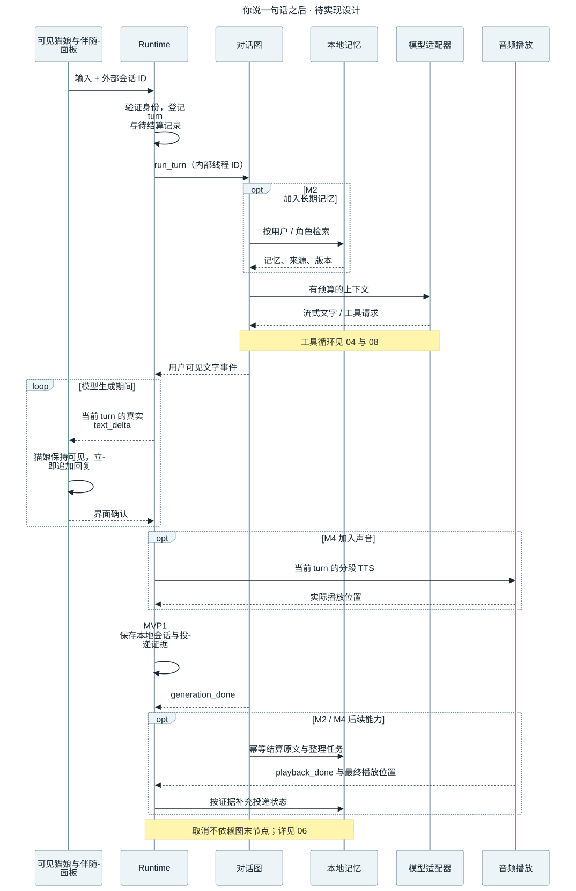
- 输入什么
- 用户当前输入
- 怎么处理
- Runtime 登记回合，图检索并调用模型，输出按轮次投递。
- 输出什么
- 已确认的对话记录与待整理任务。
容易误解的地方 取消和崩溃走独立收尾；发送片段不能直接算已显示或已听到。
复用方式与学习入口 · L02 / L03 / L06 / L09
教学主线参考流式、上下文、语音输出和记忆写入。
查看对应教程与源码映射本机 API 与事件为什么要有身份
前端能不能只给一个 thread_id 就读取记忆？
本机服务先验证连接和会话所有者，再把数据交给 Runtime；输出事件也带明确归属。
窄屏可左右滑动图形，或 打开完整大图。
- 输入什么
- 连接令牌、来源、角色、外部会话 ID 和用户输入
- 怎么处理
- loopback 入口校验 → 身份映射 → Runtime → 事件适配。
- 输出什么
- 只送给当前所属界面的事件。
容易误解的地方 无效连接拒绝；旧 turn 或重复 seq 不拼接到新消息。
复用方式与学习入口 · L02 / L13 / L23
借鉴已有 WebSocket/前端交互，通过显式映射适配，不宣称原 UI 无改动可接。
查看对应教程与源码映射LangGraph 如何完成一轮对话
谁决定下一步是回答、调用工具，还是结束？
LangGraph 是唯一对话决策中心。它读取记忆、生成回复，并在最多 3 轮工具调用后收口。内部整理节点的文字不会直接显示给用户。
窄屏可左右滑动图形，或 打开完整大图。
- 输入什么
- 经 Runtime 归属到用户、角色、内部会话及 turn_id 的当前输入。
- 怎么处理
- 校验 → 检索与上下文预算 → 模型 → 可选工具循环 → 幂等提交。流式文字经回复节点、任务用途及当前轮过滤后发送。
- 输出什么
- 可见文字事件、工具结果、持久对话记录和待整理任务；generation_done 只标记生成结束。
容易误解的地方 超限给出有限回复或明确错误；网络与工具失败有各自结果。图可能因取消不再到达末节点，因此取消结算必须由 Runtime 独立执行。
复用方式与学习入口 · L01 / L02 / L03 / L17
重写 LangGraph 编排；N.E.K.O 工具循环只参考行为，不能作为完整黑盒再套一层。
查看对应教程与源码映射Runtime 如何管理当前轮与独立收尾
为什么生成结束、播放结束和记忆保存不是同一件事？
状态图分为两个并行职责：当前轮区调度生成和媒体；结算区按回合处理持久结算。旧轮收尾可继续运行，新输入不被旧生成任务占有。
窄屏可左右滑动图形，或 打开完整大图。
- 输入什么
- 文字、语音或主动事件，以及生成完成、播放回执、取消、关闭与恢复事件。
- 怎么处理
- 接受输入先持久登记；同一会话输入排队或抢占。生成结束后仍可能等待播放。正常结束、取消和恢复都提交到同一幂等结算路径。
- 输出什么
- 明确的当前 turn_id、有效事件流、播放状态和独立的结算状态。
容易误解的地方 登记失败不启动图；取消先让旧轮失效并停止媒体。结算超时由持久记录恢复，不能被旧任务取消连带杀死；退出停止接收并清理本工程资源。
复用方式与学习入口 · L02 / L06 / L09 / L24
参考 N.E.K.O 会话、流式输出与退出约束；按新图边界重写协调层，不复用整套会话决策循环。
查看对应教程与源码映射用户插话时如何立即停止旧声音
已经取消的回复，为什么有时还会继续播放？
取消生成只处理了任务的一部分。ai-neko 的设计先使旧轮失效并停播放器、清队列，再取消图和模型；每个消费者继续拒收旧片段。
窄屏可左右滑动图形，或 打开完整大图。
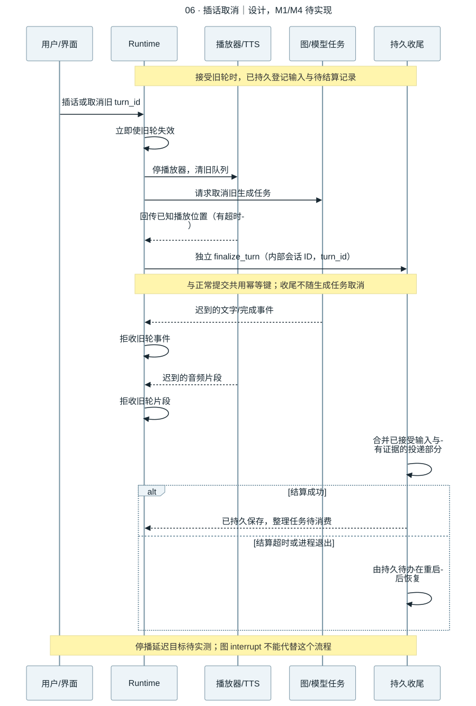
- 输入什么
- 插话或取消事件、旧 turn_id，以及此前已经落盘的输入和待结算记录。
- 怎么处理
- 停播与失效 → 取消生成 → 独立 finalize_turn → 合并投递证据。正常提交和取消共用 internal_thread_id + turn_id 幂等键，避免追加两条对话。
- 输出什么
- 旧声音停止，旧片段被丢弃，已接受输入与有证据的部分回复被保存；未确认范围明确标注。
容易误解的地方 区分已发送、界面确认与实际播放位置。结算失败或崩溃由持久待办恢复；不依赖图末节点，也不把尚未播放的语音当作用户已听到。20 次停播 p95≤300ms 是待验证目标。
复用方式与学习入口 · L02 / L04 / L06 / L09
参考原版取消、播放和轮次处理；适配到本工程统一事件信封。LangGraph interrupt 是暂停等待输入，不是这个停播动作。
查看对应教程与源码映射ModelAdapter 如何接入云模型
换模型时，哪些地方需要改？
模型适配器把项目消息转换为供应商请求，再把返回值统一为文字、工具请求、用量或错误。它负责协议，不另建自主对话循环。
窄屏可左右滑动图形，或 打开完整大图。
- 输入什么
- messages、tools、task_config、turn_id；端点和凭据由本工程配置提供。
- 怎么处理
- 协议转换 → SDK 调用 → 流式事件归一 → 保留任务与轮次归属 → 返回图或事件桥。重试策略必须有限，并尊重取消和是否已投递。
- 输出什么
- 统一的回复片段、工具请求、usage 与错误，供图路由和 Runtime 消费。
容易误解的地方 认证失败、断网、不兼容消息和超时要显式返回；旧轮晚返回不能进入新轮。选中的对话上下文会发送到配置的云端。
复用方式与学习入口 · L01 / L03 / L19
可选择性提取 N.E.K.O 自有 SDK 客户端；其中 ChatOpenAI 不是 langchain_openai.ChatOpenAI，不能假定直接兼容。
查看对应教程与源码映射工具如何安全执行并把结果交回图
图恢复或请求重试时，会不会把一个动作执行两次？
图决定调用哪个工具，执行器负责参数、范围、预算、超时、执行权和结果关联。外部副作用使用稳定操作 ID 与持久记录；状态不确定时不盲目重复。
窄屏可左右滑动图形，或 打开完整大图。
- 输入什么
- tool_call_id、args、context、operation_id，及已确认的授权范围。
- 怎么处理
- 工具与参数校验 → 预算和当前轮校验 → 只读执行或持久操作去重 → 记录结果 → 按 call_id 交回图。M1 使用合成只读工具，M5 接至少两个实际只读工具。
- 输出什么
- 成功、无结果、参数错误、超时、取消或执行状态不确定等结构化结果；工具文本仅作资料。
容易误解的地方 本地记录不能保证任意外部动作恰好执行一次。外部已完成但本地未记录时，要利用工具的幂等协议或查询结果；没有恢复能力则报告不确定，不能盲目重放。
复用方式与学习入口 · L03 / L17 / L18 / L19 / L21
按需提取纯工具和 MCP 协议适配；旧任务执行器与完整 Agent 只参考约束，不再开启第二个规划循环。插件管理仍为后续选择项。
查看对应教程与源码映射checkpoint 如何恢复会话而不串用角色资料
两个角色使用同一个会话名称，为什么不能读到彼此历史？
外部会话 ID 只是一项输入。后端为所属用户和角色绑定独立内部 ID，所有入口先校验所有者。恢复时还要确认旧上下文没有包含已删除或已纠正记忆。
窄屏可左右滑动图形，或 打开完整大图。
- 输入什么
- 受信任的本机身份、角色配置、外部 thread_id，以及查询、运行、恢复或删除请求。
- 怎么处理
- 查持久映射并校验 → 只把 internal_thread_id 传给 configurable.thread_id → 读取本地 checkpoint → 恢复前核对记忆版本及来源 → 必要时重建上下文。
- 输出什么
- 本会话消息、节点状态和执行位置；跨会话事实始终由 Memory Service 提供。
容易误解的地方 任意外部 ID 不能直接读 checkpoint。角色切换或所有者不匹配必须拒绝；旧记忆副本不能越过版本与删除策略恢复。不能用 InMemorySaver 宣称退出后可恢复。
复用方式与学习入口 · L02 / L09 / L11 / L23
内部线程映射和 LangGraph 持久化由本工程实现；参考原版范围与数据布局，但不读取其 checkpoint、运行资料或 Key。
查看对应教程与源码映射长期记忆如何写入和找回来
换一个聊天窗口、重启电脑后，为什么还能记得我说过的事情？
待实现设计：原文与任务先持久记录，后台提取有效事实；新会话通过同一个 Memory Service 检索，而非依赖旧会话 checkpoint。
窄屏可左右滑动图形，或 打开完整大图。
- 输入什么
- 带用户、角色和回合归属的原文及投递证据；检索时传入范围、查询、时间和预算。
- 怎么处理
- worker 按 source_id/job_id 重试去重；版本/删除标记校验与权威内容写入必须处于同一受控提交边界，防止检查后发生遗忘再被旧任务覆盖。检索先过滤范围与有效性，再排序裁剪；索引可重建。
- 输出什么
- 可追溯到 source_id 的有效内容、时间和 memory_revision，供对话图构造上下文。
容易误解的地方 落盘失败不能宣称已经记住；worker 异常留持久任务待恢复，失效任务终止。原版原文、outbox 与索引跨文件，不能直接宣称一次事务覆盖所有存储。
复用方式与学习入口 · L09 / L10 / L11
计划评估移植 recent/facts/hybrid_recall/outbox 的必要实现；路径、模型和任务依赖要注入本工程，尚未移植或运行。
查看对应教程与源码映射原文、事实、任务和 checkpoint 有什么关系
“聊天记录”“我喜欢茶这个事实”和“程序运行到哪一步”分别保存什么？
待实现概念关系，不是最终数据库 DDL：原文提供证据，事实表达当前有效记忆，任务负责整理；checkpoint 保存会话执行状态。
窄屏可左右滑动图形，或 打开完整大图。
- 输入什么
- 已接受的回合、确认的投递状态，以及用户与角色的可信范围。
- 怎么处理
- 每条事实可追溯来源，任务保留幂等 ID 与预期版本；修订记录决定有效性，派生索引从权威内容重建。checkpoint 归属由后端校验。
- 输出什么
- 可分别回答内容来自哪里、属于谁、是否仍有效、整理是否完成以及会话如何恢复的数据关系。
容易误解的地方 图中字段只是需要表达的概念；不承诺迁入后全部变成一张或一个 SQLite 库。checkpoint 中的旧上下文必须受遗忘与版本检查约束。
复用方式与学习入口 · L09 / L10 / L11 / L23
参考 N.E.K.O 的原始日志、recent/facts 与持久任务关系；具体 JSON/SQLite/NDJSON 布局、迁移和锁策略由 M0/M2 验证。
查看对应教程与源码映射纠正和遗忘为什么不只是删除一行
把“喜欢咖啡”改成“喜欢茶”，或要求彻底忘掉，旧信息怎样避免再次出现？
待实现设计：纠正建立新的有效事实并保留依据；遗忘还要处理原文、派生物、索引、checkpoint 副本和后台任务。
窄屏可左右滑动图形，或 打开完整大图。
- 输入什么
- 设置页的纠正或遗忘请求，以及目标内容和可信用户/角色范围。
- 怎么处理
- 先持久登记版本和变更，再清理各类副本；worker 的版本校验与权威写入共用受控提交边界，旧 checkpoint 恢复前重建上下文。备份恢复也必须重新应用删除策略。
- 输出什么
- 有效的新事实，或在检索、生成和恢复路径中均不再可用的被遗忘内容；各项清理有可追踪状态。
容易误解的地方 一处清理失败就保留待处理状态，不能提前宣布全部遗忘。备份保留期、实际擦除与恢复时删除标记的保留方案仍须在 M2/M6 实现验证。
复用方式与学习入口 · L11 / L23
参考 fact_dedup、persona/corrections 与生命周期教程；跨存储清理和 checkpoint 防回流由新工程统一落实，尚未完成。
查看对应教程与源码映射我说话、它回答、我插嘴时如何立即停声
声音怎样经过 LangGraph？用户插话时，谁负责停止正在播的那一句？
待实现设计：ASR 把声音变成文字，统一对话图产出回复，再由 TTS 合成播放；Runtime 负责轮次与取消。
窄屏可左右滑动图形，或 打开完整大图。
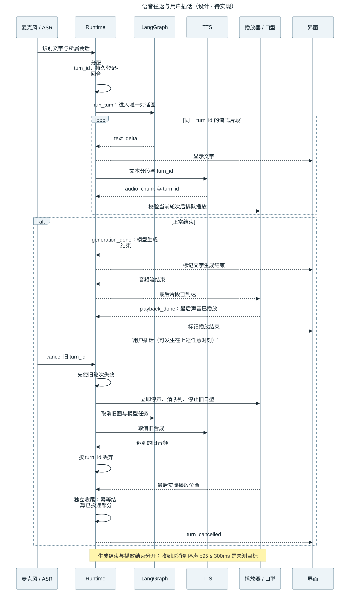
- 输入什么
- 麦克风音频及识别文本；用户插话产生的旧 turn_id 取消事件。
- 怎么处理
- 同一 turn_id 贯穿图、TTS 和播放器。取消时使旧轮失效，先停播放清队列，再取消图和合成；迟到片段继续按轮次丢弃。
- 输出什么
- 可听见的回复、同步口型与独立的 generation_done/playback_done；取消回合按实际投递证据结算。
容易误解的地方 生成结束不能算播放结束，发送音频不能算用户听到。应用收到取消到旧音频停止的 p95≤300ms 仅为待测目标，用户开口到识别出取消的延迟另测。
复用方式与学习入口 · L02 / L04 / L06
计划提取麦克风采集、一种 ASR、一种 TTS 和播放路径；回调、队列、配置与口型桥接仍需适配和 Windows 真机试听。
查看对应教程与源码映射看图和主动搭话怎样加入同一个系统
它什么时候可以看图或主动说话？会不会和用户正在说的话抢占同一轮？
待实现设计：手动视觉输入和主动触发各自做开关/有效性检查，然后进入同一个 Runtime 与 LangGraph。
窄屏可左右滑动图形，或 打开完整大图。
- 输入什么
- 用户主动选择的图像，或带触发原因的定时/活动事件；首版不默认持续采集屏幕。
- 怎么处理
- 图像做大小、格式和归属检查；主动事件遵守静音、忙碌、冷却与开关。Runtime 统一排队和抢占，始终让用户输入优先。
- 输出什么
- 由唯一对话图生成的回复；界面可见来源、触发原因和启停状态，所有媒体结果绑定当前回合。
容易误解的地方 关闭视觉后停止采集或发送新图，旧截图、迟到结果和被抢占事件丢弃。模型不支持图片时明确报错；退出要清定时器和后台任务。
复用方式与学习入口 · L07 / L08
评估图片规范化、multimodal_turn 与活动门控逻辑；旧 proactive service 的完整生成流程不并行启动。当前只有设计。
查看对应教程与源码映射复用界面和角色时需要接上哪些线
为什么可以沿用 N.E.K.O 的角色显示，却还要写事件适配层？
待实现设计：保留可用的展示/渲染组件，把旧全局状态、事件字段和资源地址接到 ai-neko 接口；首版选择一种角色格式。
窄屏可左右滑动图形，或 打开完整大图。
- 输入什么
- 用户交互、角色资料和模型资源，以及带角色/会话/turn_id 的文本、情绪、音频与终态事件。
- 怎么处理
- 适配器转换协议；消费前检查归属并去重。文字更新聊天框，情绪进入渲染器，实际播放时钟和音量驱动口型。
- 输出什么
- 可交互的聊天界面、角色表情和与实际声音同步的口型；生成状态和播放状态分别显示。
容易误解的地方 角色切换、重连、取消后拒收旧事件；不重播已确认音频。模型加载失败显示占位与错误，切换/退出释放资源，不能靠重新生成模型回复掩盖加载失败。
复用方式与学习入口 · L12 / L13 / L14 / L06
计划评估聊天消息组件和一种角色渲染路径，需适配全局回调/API 并逐项检查素材许可；这部分不代表外部 Electron 窗口与托盘已经取得。
查看对应教程与源码映射本地资料放在哪里
ai-neko 如何与原版互不干扰？
程序目录与用户数据分开，全部路径来自 ai-neko 自己的解析器。
窄屏可左右滑动图形，或 打开完整大图。
- 输入什么
- 平台路径、独立配置或 AI_NEKO_DATA_DIR 测试覆盖
- 怎么处理
- 解析并校验本工程根；禁止自动回退到原版路径。
- 输出什么
- 独立配置、记忆、checkpoint、备份与 runtime 信息。
容易误解的地方 非法路径、端口冲突、第二实例要有明确结果；备份恢复保留删除策略。
复用方式与学习入口 · L23 / L24
复用路径处理思路，应用身份与默认值必须重新定义。
查看对应教程与源码映射窗口、托盘与启动由谁负责
复用 N.E.K.O 的桌面部分怎么落地？
先核实原桌面仓库能否复用；两条选择都承载同一套前端和本机后端。
窄屏可左右滑动图形，或 打开完整大图。
- 输入什么
- 桌面入口与独立应用身份
- 怎么处理
- 取得宿主 → 启动后端 → 健康检查 → 加载前端 → 管理退出。
- 输出什么
- 可操作的窗口、托盘与角色。
容易误解的地方 独立 N.E.K.O.-PC 的访问、许可和接口未验证；Python exe 不等于完整桌面 App。
复用方式与学习入口 · L13 / L14 / L24
原壳适用则复用；否则只补最小 Electron 宿主。
查看对应教程与源码映射怎样证明它真的能在 Windows 使用
写完代码和拿到可用 App 之间还差什么？
构建产物必须在干净 Windows 机器上实际运行，再验证升级、恢复和日常使用。
窄屏可左右滑动图形，或 打开完整大图。
- 输入什么
- 版本化源码、产品依赖锁、许可与资源清单
- 怎么处理
- Windows 构建 → 干净机 → 功能与隔离 → 升级恢复 → 受控观察。
- 输出什么
- 带来源、摘要和验证记录的便携 ZIP。
容易误解的地方 任一必要验收失败都回到修复；Mac 文档渲染不属于 Windows 产品验收。
复用方式与学习入口 · L23 / L24
参考原版构建入口，按新应用身份重新验证；不沿用原版通过结论。
查看对应教程与源码映射教程和 N.E.K.O 代码怎样变成自己的模块
可以照着现有代码做，具体要经过什么？
先理解课程和源函数，再拆出边界，记录来源并在新项目重新验证。
窄屏可左右滑动图形，或 打开完整大图。
- 输入什么
- 24 课、来源清单和只读参考仓库
- 怎么处理
- 学习 → 追代码 → 查来源与许可 → 适配 → 确定性测试 → 真机/真模型。
- 输出什么
- 有独立接口、来源记录和本工程证据的组件。
容易误解的地方 教程实验通过只是教材证据；后续扩展不能偷偷进入首版验收范围。
复用方式与学习入口 · L01 / L12 / L18 / L23 / L24
界面、角色、音频、记忆可选择性移植；旧完整对话循环不嵌入新图。
查看对应教程与源码映射模块覆盖表
目录是规划中的职责划分，不代表这些模块已写出代码。概念数据关系也不是最终数据库 DDL。
| 计划 / 模块 | 对应图 | 重点 |
|---|---|---|
| M0–M6 实施计划 | 00 | 顺序与验收，不虚构工期 |
| 系统架构与完整回合 | 01 / 02 | 本机/云端边界与一次对话 |
| app：本机 API、事件协议 | 03 | 连接校验、身份与事件归属 |
| graph：状态、节点、路由 | 04 | 唯一对话决策与工具循环 |
| runtime：回合与取消 | 05 / 06 | 状态与独立持久收尾 |
| adapters：模型协议 | 07 | 模型事件标准化，不自建第二个 agent |
| tools：工具与插件边界 | 08 | 预算、授权、结果与副作用防重放 |
| checkpoints：会话持久化 | 09 | 内部 ID 与恢复时记忆版本校验 |
| memory：写入、检索、整理任务 | 10 / 11 | 单一长期权威与概念数据关系 |
| memory：纠正与遗忘 | 12 | 派生物、旧副本、在途任务和恢复 |
| media：ASR、TTS、播放 | 13 / 06 | 听说链路与立即停止旧音频 |
| 视觉与主动事件 | 14 | 门控与同一 Runtime 入口 |
| frontend：界面、角色、口型 | 15 | 事件适配与状态呈现 |
| config：路径、凭据、存储隔离 | 16 | ai-neko 独立应用资料 |
| desktop：窗口、托盘、进程 | 17 | 条件复用与本工程生命周期 |
| tests / build：Windows 交付 | 18 | 干净机、升级恢复与观察证据 |
| 来源迁入与后续扩展 | 19 | 教程到模块，首版与后续边界 |